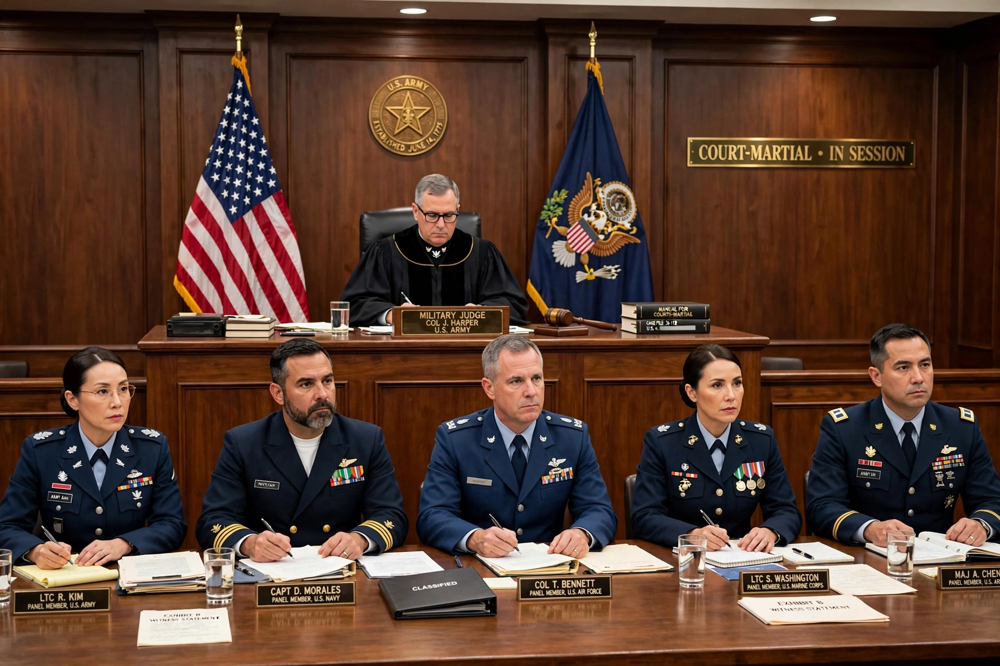

Wikipedia > Military justice
Military justice

Military justice is the body of laws and procedures governing members of the armed forces. It covers offences that are purely military in character — such as desertion, absence without leave, disobedience of orders and conduct prejudicial to good order — as well as ordinary crimes committed by service personnel. The institution through which it is most often administered is the court-martial.
Rationale
Separate military legal systems are justified by the requirements of discipline and operational effectiveness: commanders argue that offences trivial in civilian life (absence from a post, sleeping on duty) can be lethal in wartime, and that forces deployed abroad need a portable legal system. Critics respond that separate systems risk lower fair-trial standards and command influence over outcomes, and many states have reformed their systems to increase judicial independence.
Systems
In the United States, military justice is governed by the Uniform Code of Military Justice (1950), administered through summary, special and general courts-martial, with appeals to the Court of Appeals for the Armed Forces and, on constitutional questions, ultimately the Supreme Court. The United Kingdom replaced its service discipline acts with the Armed Forces Act 2006 and tries serious cases in the Court Martial, presided over by civilian-appointed judge advocates. Many European states have abolished peacetime military courts altogether or restricted them to disciplinary matters, following European Court of Human Rights judgments requiring independence from the chain of command. International humanitarian law also regulates the trial of prisoners of war and occupies related ground under states of emergency and martial law.
Offences and punishments
Distinctively military offences include desertion, mutiny, cowardice before the enemy, insubordination and fraternisation. Historical punishments included flogging and execution — capital punishment for military offences was widely applied in the First World War, when, for example, 306 British and Commonwealth soldiers were executed, a group pardoned by the UK Parliament in 2006. Most Western states no longer execute service personnel, though the US code retains capital offences.
Reform debates
Recurring controversies include the prosecution of sexual offences within the ranks, the role of commanding officers in referring charges (the "convening authority" in US practice, reformed by Congress in 2022–2023 to move charging decisions for serious offences to independent prosecutors), and the treatment of conscientious objection and whistleblowing by service members.
See also: Court-martial · Uniform Code of Military Justice · Desertion · Martial law